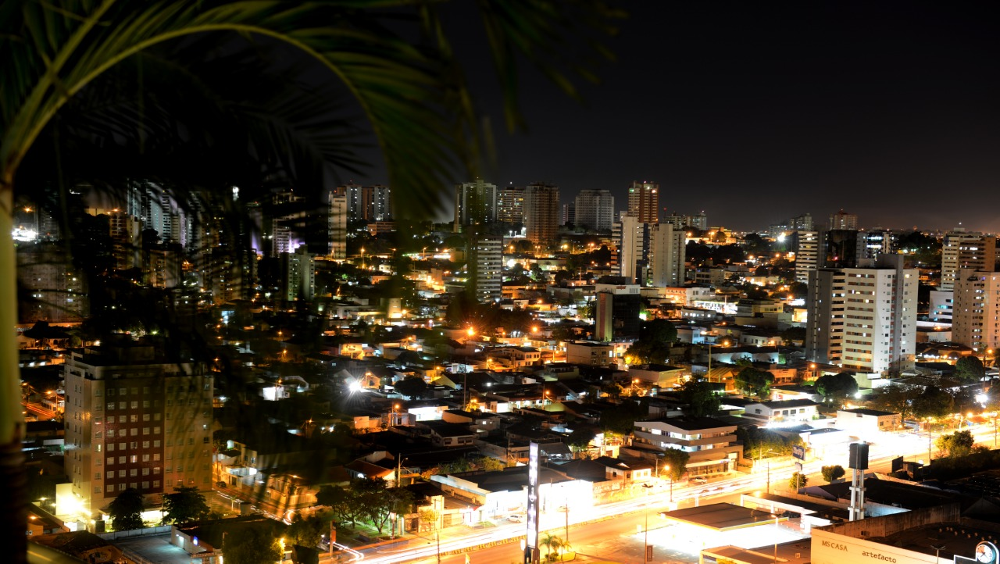
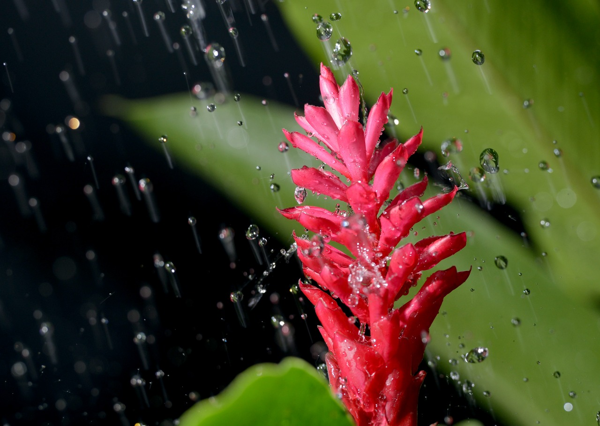
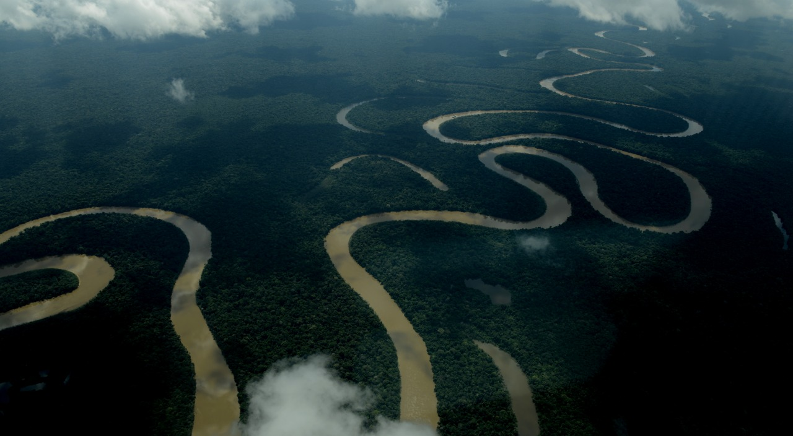

Encontro das Águas
O Rio Negro e o Rio Solimões correm lado a lado por quilômetros sem se misturar, criando um dos espetáculos naturais mais únicos do mundo.
 Aventura
Aventura
Jalapão — Fervedouros e Dunas
Piscinas naturais de água cristalina, dunas de areia dourada, serras e cachoeiras numa paisagem de outro mundo no coração do Tocantins.

CulturaFestival Folclórico de Parintins
O maior festival folclórico do Brasil. Dois bois bumbás — Garantido e Caprichoso — disputam a glória num espetáculo de cores e emoção por três noites.
Ilha de Marajó
A maior ilha fluviomarinha do mundo, no estuário do Amazonas. Búfalos, aves raras, praias de rio e a cultura marajoara milenar te esperam.
 Cultura
Cultura
Ver-o-Peso & Mercado Municipal
O mercado mais famoso da Amazônia, em Belém. Peixes raros, frutas exóticas, ervas medicinais e a culinária paraense que conquistou o mundo.

AventuraTurismo de Selva — Rio Negro
Passeios de barco pelos igarapés, noites na floresta, avistamento de jacarés e botos-cor-de-rosa, pesca de piranha e convivência com ribeirinhos.
 Aventura
Aventura
Monte Roraima & Tepuis
Montanhas tabulares que tocam as nuvens. Território sagrado dos povos Pemón e Macuxi. Trekking de 5 a 8 dias até o topo a 2.875 m de altitude.
Teatro Amazonas & Belle Époque
Construído no apogeu da borracha, o Teatro Amazonas é um dos edifícios mais belos do Brasil — símbolo do ciclo do látex no século XIX.

NaturezaAlter do Chão — Caribe da Amazônia
Praias de areia branca e água verde-esmeralda do Rio Tapajós que surgem entre agosto e novembro. Considerado o mais belo balneário da Amazônia.
Comunidade Yanomami
Os Yanomami são um dos povos indígenas mais numerosos da Amazônia. Visitas culturais guiadas permitem conhecer sua cosmologia, medicina e artesanato.
Açaí no Ver-o-Peso, Belém
O açaí paraense é servido puro, cremoso e escuro — do jeito local, sem banana ou granola. O Ver-o-Peso é o lugar certo para a experiência autêntica.
 Natureza
Natureza
Capim Dourado — Mumbuca, TO
Fibra natural dourada que só existe na Serra do Espírito Santo. A Comunidade Mumbuca tece artesanato exclusivo e recebe visitantes durante a colheita.